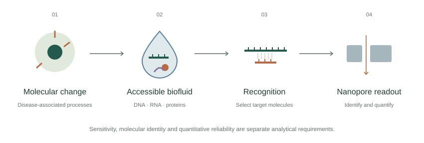
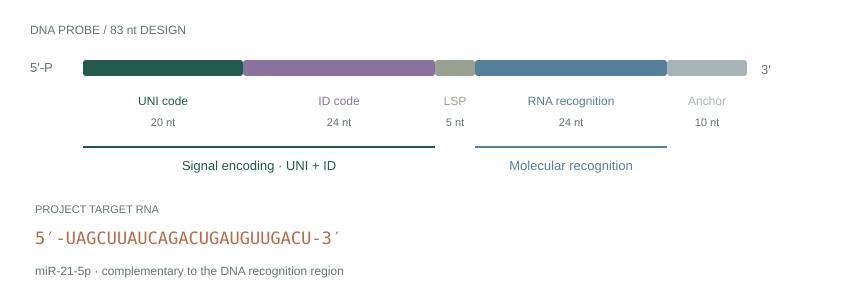
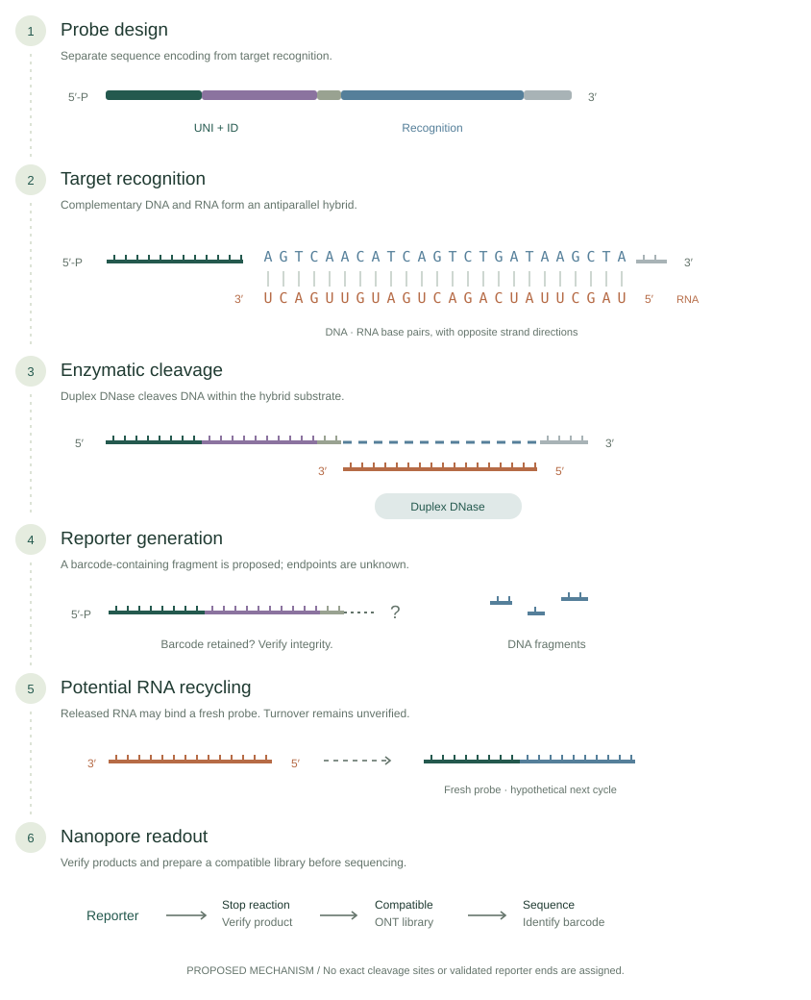

RESEARCH DIRECTION 02 / IMPERIAL COLLEGE LONDON
Enzyme-Mediated RNA Detection
Exploring RNA recognition, Duplex DNase-mediated DNA cleavage, proposed reporter generation and potential signal amplification.
01 / Enzyme-Mediated RNA Detection
Scientific motivation
Low-abundance RNA biomarkers present a problem of recognition, background and quantitative reliability.
Circulating miRNAs can provide information about biological and disease-associated processes. Low abundance, degradation and a complex molecular background complicate detection and interpretation. The proposed strategy explores chemical recognition and reporter generation as a route to a sequence-based readout.
Liquid biopsy examines molecular biomarkers in accessible biofluids, offering minimally invasive sampling and the possibility of repeated measurements. Circulating DNA, RNA and proteins can provide complementary information about biological processes. [3]
Low abundance, degradation and complex sample backgrounds can make a disease-associated signal difficult to distinguish from other molecules. A sensitive sensor must also establish what it detected and whether its readout supports a reliable concentration estimate.

Early molecular detection is a research motivation. Analytical sensitivity alone does not establish screening benefit, disease specificity or clinical utility.
02 / Enzyme-Mediated RNA Detection
Molecular recognition
A complementary DNA region binds the model RNA target miR-21-5p.
Complementary base pairing brings DNA and RNA together as an antiparallel hybrid. The recognition sequence determines which RNA is addressed; the barcode sequence encodes the identity of the reporter. The model RNA in the supplied design is miR-21-5p, matched to the linked miRBase record. [6]
RNA-probe architecture and proposed cleavage concepts are informed by Minghui Qi’s viva and the MSci project presentation. They are not presented as individually demonstrated experimental achievements.
03 / Enzyme-Mediated RNA Detection
DNA probe architecture
Recognition and signal encoding occupy different functional regions.
The supplied probe includes a UNI code and ID code for signal encoding, an LSP region, a complementary RNA-recognition region and an anchor. These design labels do not by themselves establish protective or structural functions: LSP protection and the anchor’s experimental role require protocol confirmation.

04 / Enzyme-Mediated RNA Detection
Duplex DNase-mediated cleavage
General substrate behaviour does not establish the outcome of a particular probe design.
Duplex DNase preferentially degrades duplex DNA and can cleave the DNA strand of a DNA–RNA hybrid. The enzyme acts on an appropriate duplex substrate; complementary probe binding supplies the sequence selectivity. [5]
For this proposed assay, the location and extent of DNA cleavage, release of the RNA and survival of the barcode-containing region remain experimental questions. No exact cleavage sites or verified reporter ends are assigned.
05 / Enzyme-Mediated RNA Detection
Proposed DNA reporter generation
Target-dependent cleavage could produce a DNA fragment containing an identifiable barcode.
The intended output is a barcode-containing DNA reporter. Its sequence identity, terminal structure, length distribution, integrity and recovery must be verified. A molecular design alone does not establish that an intact, sequence-compatible reporter is produced.

06 / Enzyme-Mediated RNA Detection
Potential RNA recycling and signal amplification
The same RNA may participate in further probe-recognition and cleavage cycles.
If RNA survives cleavage and dissociates from DNA fragments, it could bind a fresh probe. Repeated participation could generate more than one reporter per target RNA. This is proposed target recycling, not RNA replication or an exponential amplification scheme.
Repeated turnover, the number of intact reporters, background generation and response to reaction time need validation before making an amplification or sensitivity claim.
07 / Enzyme-Mediated RNA Detection
Multiplexed molecular detection
Distinct recognition regions could be associated with different reporter barcodes.
In principle, one probe could recognise RNA A and encode barcode A, while another recognises RNA B and encodes barcode B. Sequence assignment could then separate their reporter populations within a shared readout. Cross-recognition, background cleavage, reporter recovery and classification would need assessment across the probe set.
Multiplexing is a research objective for the proposed RNA assay. It is not a demonstrated result of this project. Related published barcoded-probe work provides broader context. [4]
08 / Enzyme-Mediated RNA Detection
ONT readout and quantitative calibration
The RNA strategy can support quantitative investigation through its own suitable calibration.
After stopping the reaction and verifying products, an appropriate library must make the reporter compatible with ONT sequencing. Short DNA fragments are not automatically suitable for motor-controlled sequencing. Adapter compatibility, any C-strand use and reference-addition timing require protocol confirmation.
Basecalling and sequence classification could identify and count reporter populations. Known RNA standards must pass through the complete reaction, recovery, library and sequencing workflow to relate that readout to original RNA input. Reporter concentration and read counts are different quantities from target RNA concentration.
Enzyme-mediated RNA detection is independent of the B1/B3 DNA quantification direction. B1/B3 experiments are not a prerequisite. The RNA assay requires calibration of its own complete response.
09 / Enzyme-Mediated RNA Detection
Research questions
Recognition, signal generation and measurement each need their own evidence.
- Does target recognition lead to specific, recoverable barcode-containing reporters?
- Can the same RNA undergo repeated productive cycles, and what background accompanies reporter generation?
- Can distinguishable probe barcodes support selective multiplexing?
- How does the complete calibrated readout relate to RNA input, with suitable precision and reproducibility?
10 / Enzyme-Mediated RNA Detection
Broader group context
Related strategies use different ways to connect recognition to an electrical or sequence signal.
The supplied viva also explores binding-induced strand displacement, in which target binding changes probe pairing to release or expose a DNA barcode, and delay sensing, in which a target bound to a probe changes translocation dynamics. These are distinct from the proposed Duplex DNase conversion pathway.
Combining recognition elements for RNA, DNA and proteins could connect different biomarker classes to a common readout. These are broader research directions presented by Minghui Qi and the research group. They are not claims about my individual experimental contributions. Published barcoded-probe work provides related scientific context. [4]
SOURCES & ATTRIBUTION
Sources and research context
The current project presentation is the primary scientific source. Minghui Qi’s supplied viva provides broader group context and the probe architecture. Proposed reporter generation, RNA recycling and multiplexing have not been presented here as validated outcomes.
Supplied presentation sources
Yihan Li, Nanopore-Based DNA Barcode Quantification Towards Early Disease Detection, MSci project presentation, Imperial College London (2026).
Minghui Qi, Multiplexed and Multimodal Liquid Biopsy for Early-Stage Disease (Cancer) Detection Using the Oxford Nanopore Platform, viva presentation, Imperial College London (2026), supervisor Joshua Edel. Broader group concepts and proposals are not attributed as Yihan Li’s individual experimental contributions.
- Wang et al. · Nanopore sequencing technology, bioinformatics and applications ↗
Nature Biotechnology 39, 1348–1365 (2021). Biological nanopore sequencing and interpretation of electrical signals.
- Siravegna et al. · Integrating liquid biopsies into the management of cancer ↗
Nature Reviews Clinical Oncology 14, 531–548 (2017). Liquid biopsy context cited in the supplied project presentation.
- Koch et al. · Nanopore sequencing of DNA-barcoded probes for highly multiplexed detection of microRNA, proteins and small biomarkers ↗
Nature Nanotechnology 18, 1483–1491 (2023). Published recognition-probe and barcode context; no performance results are reproduced here.
- New England Biolabs · Duplex DNase, M7635 ↗
Manufacturer evidence for preferential duplex DNA cleavage and activity on the DNA strand of DNA–RNA hybrids. It does not validate the proposed complete RNA assay.
- miRBase · hsa-miR-21-5p, MIMAT0000076 ↗
Sequence reference checked against the supplied 24-nt target design. Accessed 4 November 2026.
All scientific schematics are original conceptual illustrations. No unpublished experimental data or numerical performance results are reproduced.